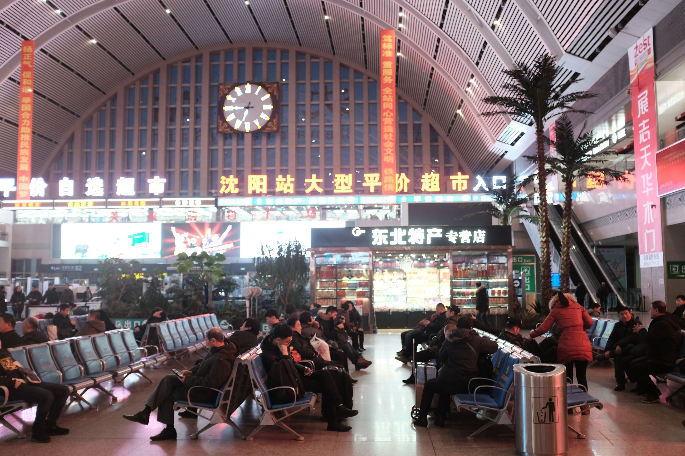
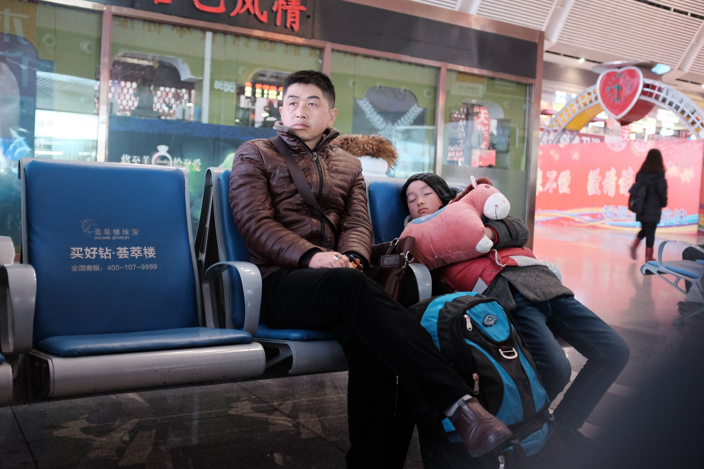
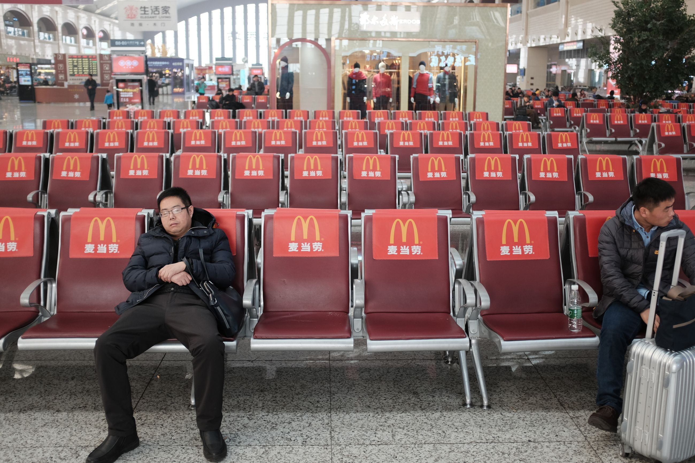
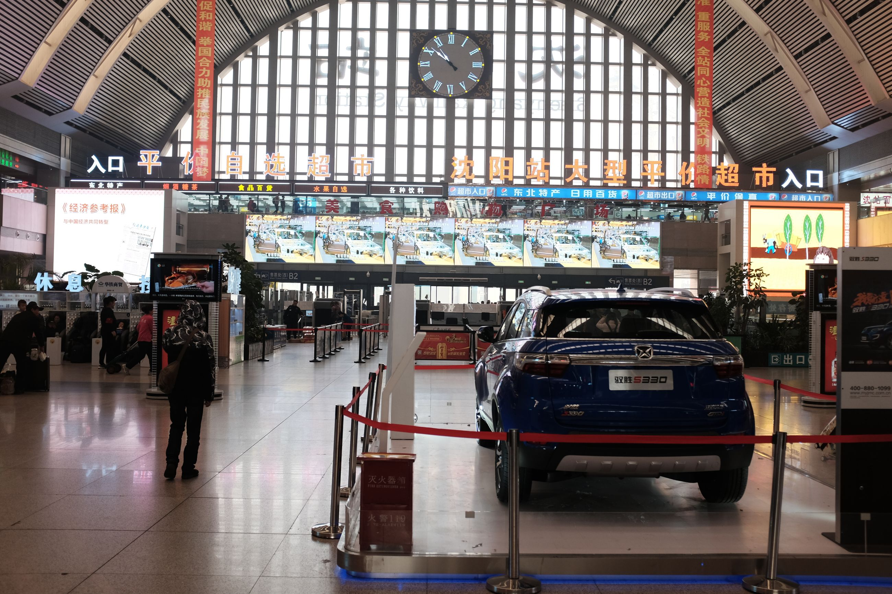
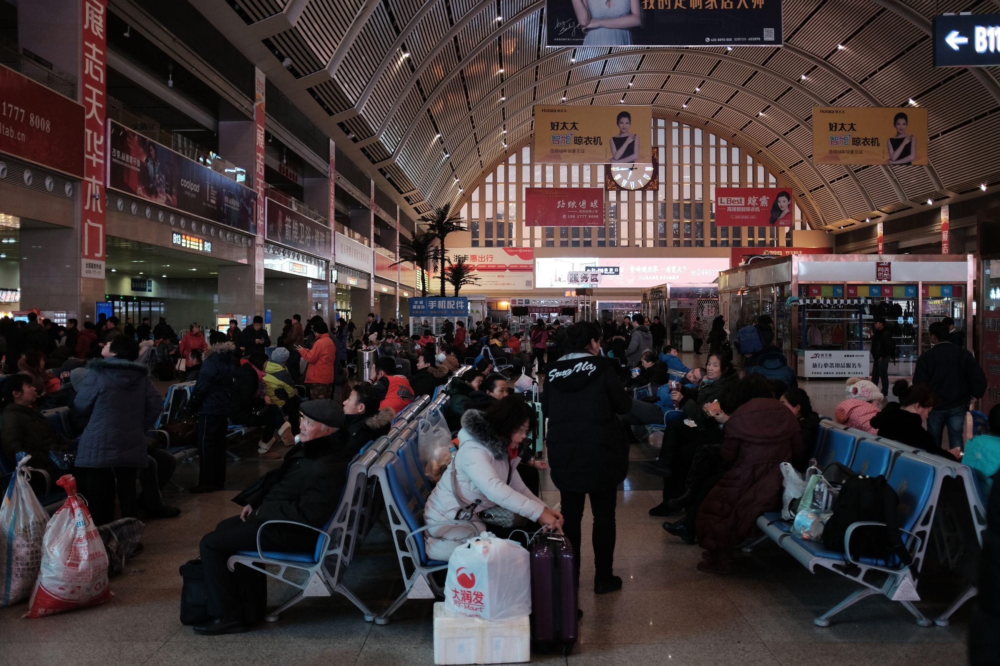

We had a lazy day. We needed the rest. The weather was catching up to us, and so was the pollution. Thorin started getting plugged up, and I started having a cough. I begin to feel my physical transformation into a Chinese man has already started.
I'm calling this entry, day 11, "In Transit." It's just various train station pictures that we've taken. If you love people watching at the airport, try people watching at a Chinese train station. People from all walks in China, waiting for their next stop. A country in transit.




